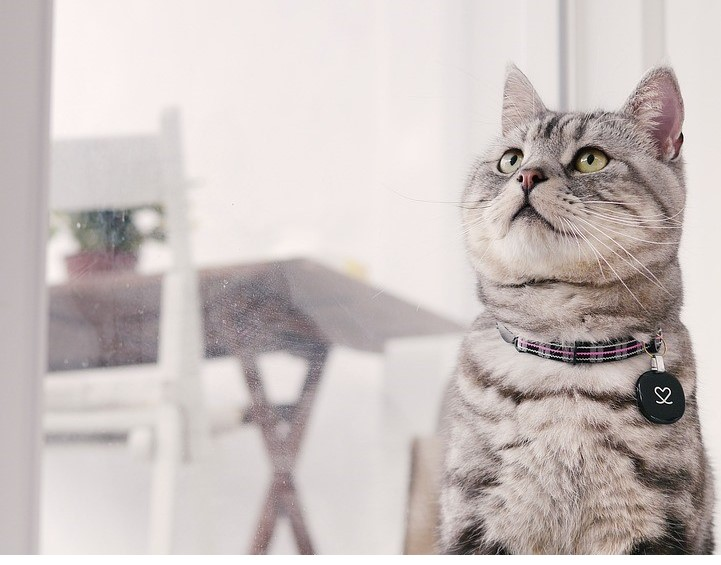

연혁:
초기 정착민들과 함께 다양한 배경을 가지고 미국에 도착해 "아메리칸" 고양이를 형성했다. 이 고양이들은 선박의 상점을 보호하는 "일하는 고양이" 역할을 했다. 초기 미국 고양이는 사냥 기술로 강한 생존력을 가졌으며, 지능과 다양한 색상으로 주목받았다. 1900년대 초반, 도메스틱 쇼트헤어로 알려진 이 고양이들은 고양이 전시회에서 대표되었고, 선택적 번식을 통해 특정 유형의 고양이가 개발되었다. 1960년대 초반, 아메리칸 쇼트헤어로 이름이 바뀌며 쇼 순회 대회에서 경쟁자로 떠올랐다.
외모:
중간 크기와 중간 뼈대를 가진 균형 잡힌 고양이로, 머리와 눈, 턱, 귀가 조화롭게 배치되어 있다. 짧고 밀도 있는 털은 주로 갈색 태비에서 이상적인 질감을 보이며, 색상과 무늬의 명확성이 중요하다. 이 고양이들은 3-4년이 지나야 완전히 성숙하며, 주간 빗질 외에는 특별한 관리가 필요하지 않다.
성격:
가족 친화적이고 아이들을 잘 받아들이며, 지능적이고 사냥 본능을 유지하면서도 독립적이다
연혁:
'아르한겔스크 고양이'로도 알려져 있으며, 그 이름은 러시아의 아르한겔스크 항구에서 유래했습니다. 이 고양이들은 선원들과 함께 유럽으로 전해졌고, 1880년대 영국의 첫 고양이 쇼에 등장했습니다. 전쟁 후, 사육자들은 러시안 블루 혈통을 복원하기 위해 다른 고양이들과 교배를 시도했습니다. 북미에서는 1900년대 초에 러시안 블루가 도입되었고, 영국과 스칸디나비아의 고양이들을 결합하여 현대 러시안 블루를 개발했습니다. 오늘날의 러시안 블루는 에메랄드 눈과 은빛이 감도는 푸른 털, 그리고 특유의 미소를 가진 고양이로 알려져 있습니다.
외모:
짧고 밀도 있는 은빛 파란 털과 에메랄드 그린 눈을 가진 우아한 고양이이다. 이 고양이는 중간 크기의 외국형 몸매에 긴 다리와 7개의 각이 진 머리를 가지고 있으며, 신비로운 미소로 유명다. 러시안 블루는 은빛이 감도는 파란 털과 고귀한 자태로 귀족적인 외모를 자랑한다.
성격:
지능이 높고 애정이 넘치는 고양이로, 낯선 사람에게는 신중하지만 친해지면 매우 애정 깊고 아이들과 다른 애완동물과도 잘 어울린다.
연혁:
1961년 스코틀랜드에서 목자 윌리엄 로스에 의해 발견된 첫 번째 스코티시 폴드는 스코티쉬 폴드의 시조인 밀짚고양이 수지였으며, 이후 스코티시 폴드는 둥근 형태와 아름다운 가족용 랩캣으로 발전했다. 수지는 단색 흰색 장모의 암컷이었으며, 고양이 애호가들은 이를 페르시안, 아메리칸 숏헤어, 익조틱 숏헤어, 심지어 버메즈와 교배하여 오늘날 사랑받는 둥근 달콤한 외모를 얻기 위해 노력했다. 지금까지 살아있는 모든 스코티시 폴드는 조상으로부터 원조 수지로 거슬러 올라갈 수 있습니다. 현재 TICA 스코티시 폴드 사육사들은 브리티시 숏헤어와 아메리칸 숏헤어를 사육 프로그램에 사용할 수 있습니다.
외모:
전통적인 패턴과 포인티드 디비전의 모든 색상과 무늬를 갖추고 있으며, 장모와 단모의 다양한 종류도 있다. 모든 눈 색상을 찾을 수 있지만, 구리색 눈이 가장 흔한 색상이다. 그들은 둥근 얼굴, 둥근 눈, 둥근 몸을 가진 중간 크기의 고양이로, 가장 독특한 점은 작고 귀여운 접힌 귀이다. 모든 스코티시 폴드 새끼 고양이는 직장이 엎드려진 귀를 가지고 태어난다. 18~24일 사이에 귀가 접히는데, 이는 귀를 접히게 하는 유전자를 가지고 있을 때에만 발생한다.
성격:
지적이고 호기심이 많으며 가족에게 충실하다. 집 안을 숨어다니지 않고 주위를 따라다니기를 좋아한다.
연혁:
실제 기원은 알려지지 않았지만 동양 출신임은 확실하다. 태국의 고대 수도인 아윳타야의 문서에는 현지 고양이에 대한 기록이 있었다. 1350년에 작성된 '고양이 서시'라는 문서는 검은 마스크, 꼬리, 발과 귀를 가진 밝은 모피의 고양이를 그렸다. 샴 고양이는 1871년 런던의 크리스탈 팰리스 고양이 쇼에서 유럽에 처음으로 소개되었으며, 1879년 미국으로 처음으로 샴 고양이가 들어왔다.
외모:
상호작용과 활동이 많은 반려동물을 원하는 사람에게 이상적이다. 아이들과 다른 애완동물과 함께할 때 훌륭하며, 애정이 많고 충성심이 강하며 직관적이고 사회성이 뛰어나다.
성격:
긴 몸과 긴 다리, 긴 삼각형 모양의 머리와 거대한 삼각형 모양의 귀로 정의되는 우아한 고양이이다.
연혁:
스칸디나비아에서 수세기 동안 진화한 강건하고 튼튼한 몸과 두꺼운 털로 알려져 있다. 바이킹들과 함께 여행하며 배와 마을을 쥐로부터 지켜왔다. "스코그캇"으로 불리는 노르웨이 숲 고양이는 바이킹 전설과 신화에 등장했다. 그러나 20세기에 들어서면서 노르웨이 숲 고양이는 고국에서 드문 존재가 되었고 멸종 위기에 처했다.
외모:
몸은 크고 근육질이며 튼튼하다. 힘과 민첩성은 어떠한 표면에도 올라갈 수 있는 자연스러운 사냥꾼으로 만든다. 물을 튕기는 반발성이 있는 반장털과 짙은 밑털로 발달한 반장터는 고양이가 혹독한 스칸디나비아 기후에서 생존하는 데 도움을 준다.
성격:
지능적이고 창의적인 노르웨이 숲 고양이는 온화한 성격의 품종으로, 주변 환경에 쉽게 적응한다. 그들은 매우 활발하며 가족 환경의 일원으로서 함께하는 것을 즐기며, 게임을 즐기는 사람과 함께 놀기를 좋아한다.
연혁:
페르시안 고양이의 역사는 대부분 기록되지 않았지만, 수세기 동안 존재해왔다는 것은 확실하다. 초기 고양이 쇼에서 페르시안 고양이는 둥근 머리, 짧은 얼굴, 들창코, 둥근 볼, 튼튼한 몸을 가진 것으로 묘사되었다. 1800년대 후반부터 고양이 애호가들은 더 둥근 머리, 작은 귀, 짧은 코, 큰 눈, 튼튼한 몸을 선택적으로 번식시켰다. 1900년까지 미국에서는 페르시안 고양이를 영국에서 수입하여 인기가 높아졌고, 파란색과 은색 페르시안이 특히 인기를 끌었다.
외모:
중형에서 대형까지 다양한 크기로, 둥근 머리와 짧고 두꺼운 꼬리를 가진 근육질 몸매를 자랑한다. 길고 화려한 털은 일일 관리가 필요하며, 각 색상과 패턴에 따라 특별한 관리가 요구된다. 우아하고 품위 있는 페르시안 고양이는 다양한 색상으로 제공되며, 일상적인 손질을 통해 집안에 매력을 더하는 특별한 동반자가 된다.
성격:
온순하고 조용한 성격으로 집안에서 차분하게 지내며, 주인이 시간을 내어주면 애정을 즐기지만 혼자서도 편안하게 지낸다.
연혁:
앤 베이커는 1960년대 초 캘리포니아 리버사이드에서 랙돌 고양이 품종을 개발했다.
랙돌 품종의 시초는 순백색 장모 고양이 조세핀과 수컷 시일 미티드 고양이 대디 워벅스, 검은 고양이 블랙이다.
베이커는 조세핀이 병원 치료 후 유전자 변형을 겪어 랙돌 고양이의 독특한 성격을 가지게 되었다고 주장했다.
초기에는 베이커의 프랜차이즈 계약하에 몇몇 사육자가 있었으나, 시간이 지나면서 독립하여 품종을 발전시켰다.
덴니와 로라 데이튼은 베이커와 결별 후 랙돌 품종을 주요 등록 기관에서 인정받는 정식 품종으로 만드는 데 중요한 역할을 했다.
외모:
부드러운 중간 길이의 털과 아름다운 파란 눈을 가진 대형 고양이로, 다양한 색상과 패턴을 가지고 있다. 이들은 느긋하고 친근하며, 성숙하는 데 4년까지 걸린다. 랙돌의 털은 주간으로 빗질해주면 관리가 쉬우며, 털갈이 시기에는 겨드랑이 부분의 엉킴을 주의해야 한다.
성격:
사랑스럽고 차분하며 다른 동물이나 아이들과 잘 어울리는 친근하고 지능적인 품종으로, 인형처럼 안기면 축 늘어지는 특징이 있다.
연혁:
터키시 앙고라는 앙카라(옛 앙고라)에서 유래한 고양이로, 16세기 프랑스에서 처음 기록되었다. 1900년대 초 페르시안 고양이 번식에 사용되면서 별개의 품종으로 사라졌지만, 터키는 이들을 국보로 여겨 앙카라 동물원에서 보존 프로그램을 시작했다. 1950년대 미국 군인들이 앙카라 동물원에서 이 고양이들을 발견하고 소식을 전했고, 1962년 그랜트 부부가 앙카라 동물원에서 고양이 한 쌍을 가져오면서 미국에서 새로운 번식 프로그램이 시작되었다. 1970년대 다른 고양이들이 추가로 수입되면서 터키시 앙고라는 북미에서 확립된 품종이 되었다.
외모:
터키시 앙고라는 매트가 잘 생기지 않는 반장모, 부드럽고 실키한 털을 가지고 있어 주 1회 빗질만으로 유지가 가능하다. 전통적으로 흰색이 주로 알려져 있지만 다양한 색상을 지니며, 여름에는 짧아지고 겨울에는 긴 털과 멋진 갈기, 브리치, 플룸형 꼬리를 갖춘다. 우아한 외모와 달리 강한 근육질 몸매를 지녔고, 큰 귀와 호두형 눈, 길고 아름다운 꼬리를 가지고 집안을 활기차게 뛰어다닌다.
성격:
터키시 앙고라는 근육질 몸매와 민첩함, 뛰어난 지능을 지닌 활발하고 애정 넘치는 고양이로, 다른 애완동물들과 잘 지내지만 자신이 우두머리임을 인식하게 만든다.